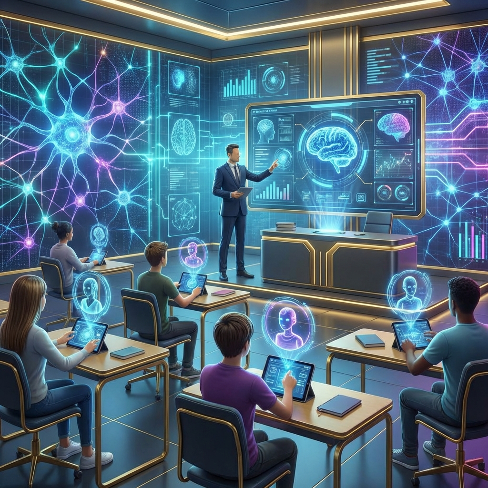
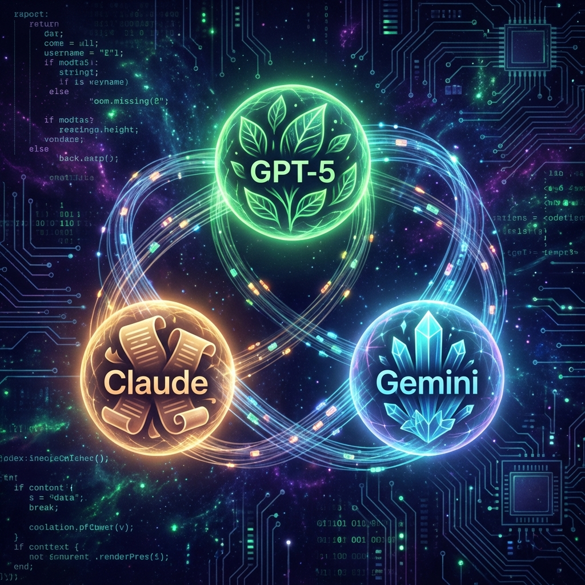

📋 Výkonné shrnutí
Rok 2025 a začátek roku 2026 přinesly zásadní transformaci AI ve vzdělávání. Nejde více o experimentech—systémy založené na umělé inteligenci jsou nyní integrovanou součástí infrastruktury tisíců škol po světě.
V Česku to dokumentuje spuštění největšího vzdělávacího programu pro učitele a rostoucí adopce domácího nástroje ScioBot, který již pomáhá více než 45 000 pedagogům. Současně však vyvstávají kritické otázky kolem halucinací AI modelů, bezpečnosti dat a etických standardů.
🤖 Nové generace jazykových modelů
Praktický přehled pro učitele o nejnovějších AI modelech a jejich možnostech ve vzdělávání.
🌿 OpenAI GPT-5
Model GPT-5 se stal standardem pro vzdělávání od listopadu 2025. Jeho klíčová vylepšení zahrnují:
- Persistent memory – pamatuje si preference a kontext z předchozích rozhovorů
- Unified intelligence – dynamicky volí mezi rychlým odpovídáním a hlubokou analýzou
- 256K kontextové okno – analýza celoročních učebních materiálů v jednom rozhovoru
V praxi to znamená, že student má konzistentního učitele, který se postupně učí jeho styl učení.
🧠 Claude 4 Opus a Sonnet
Anthropic představila v září 2025 Claude Sonnet 4.5, který překvapivě překonal konkurenční modely v benchmark testech:
- 77% úspěšnosti v náročném SWE-Bench Verified testu
- Autonomní kódování až 30 hodin bez přerušení
- Nižší halucinace a přirozenější projev
- Výrazně lepší v matematice a logickém uvažování
Pro učitele informatiky prakticky neomezený AI asistent pro tvorbu cvičení.
✨ Google Gemini 2.5 Pro a LearnLM
Google vyvinul speciální rodinu modelů LearnLM, která je od základu fin-tunována podle principů pedagogické vědy:
- Guided Learning – interaktivní tutoriál krok za krokem
- Automatická integrace vizuálů – YouTube videa a diagramy přímo v odpovědích
- Gemini Canvas – interaktivní prostor pro spolupráci AI a člověka
- Audio Overviews – převod dokumentů na poslouchatelné podcasty
Gemini je integrován zdarma do Google Classroom pro školy s Google Workspace for Education.
🛠️ Pedagogické nástroje a aplikace
NotebookLM: Revoluce v práci s vlastním obsahem
NotebookLM zůstává jedním z nejuniverzálnějších nástrojů pro učitele. Genialita spočívá v tom, že stane se expertem pouze na vaše dokumenty (ŠVP, učebnice, vlastní materiály).
📦 Největší aktualizace prosinec 2025
- Limit instrukcí vzrostl z 500 na 10 000 znaků
- Plnohodnotná mobilní aplikace s fotografováním tabule
- Interactive Mode pro podcasty (přerušit, zeptat se, pokračovat)
- Studio suite: automatické flashcards, kvízy, studijní příručky
- Integrace s Google Classroom bez ručního uploadu
Canvas LMS s OpenAI: Instituční přístup
Instructure a OpenAI oznámili v červenci 2025 historické partnerství. Učitelé mohou nyní přímo v Canvas LMS vytvářet LLM-Enabled Assignments—interaktivní AI cvičení.
🔒 Kritické vlastnosti
- Studentská data zůstávají v Canvas a nejsou sdílena s OpenAI
- Učitel si udržuje plnou kontrolu nad AI prompty
- „Evidence učení" — interakce se zobrazí v Gradebook jako měřitelná kritéria
🇨🇿 Česká situace: Od iniciativ k masové adopci
Program základka.ai: Největší vzdělávací iniciativa
Česká republika spustila v říjnu 2025 ambiciózní program základka.ai, jehož cílem je během školního roku 2025/2026 proškolit všechny učitele základních škol.
📚 Co program zahrnuje
- Více než 100 hodin vzdělávacího obsahu
- Online kurzy, praktické webináře, expertní konference
- Budování strategické podpory AI na školách
- Partneři: AI dětem, Národní pedagogický institut, Česká asociace AI
ScioBot: Domácí úspěch
ScioBot, vyvíjený českými specialisty, získal v listopadu 2024 ocenění AI Awards v kategorii AI ve vzdělávání. Klíčové prvky:
- Konstruktivistický model E-U-R (Experience-Understanding-Reflection)
- Inkluze: automatizace přizpůsobení pro žáky s ADHD, cizím jazykem, SVP
- ScioChatBot 2025: AI asistent optimalizovaný pro české školství
GPT-EDU: Moderovaný přístup
GPT-EDU poskytuje přístup k GPT-5 prostřednictvím moderovaného rozhraní vhodného i pro žáky prvního ročníku. Obsah je filtrován v souladu s RVP ZV a pedagogickými zásadami.
🎯 Personalizace a diferenciace

Adaptivní učení na velkém měřítku
AI umožňuje to, o čem učitelé dlouhodobě sní: skutečné personalizované učení. Nikoliv všechny žáky jedinou metodou, ale přizpůsobení tempa, obsahu a zpětné vazby každému jednotlivci.
Diferenciace bez přetížení učitele
AI umožňuje učiteli během minuty generovat:
- Sadu úloh pro nadané žáky (komplexnější úkoly, výzkumné projekty)
- Zjednodušené verze pro žáky se SVP
- Průměrné úkoly pro zbytek třídy
- Studijní průvodce, flashcards, kvízy—v libovolném počtu variací
To, co dřív trvalo 2-3 hodiny ruční práce, teď trvá 10 minut.
⚠️ Bezpečnost, etika a halucinace
🚨 Halucinace zůstávají problémem
Halucinace (model si vymýšlí přesvědčivě znějící, ale nepravdivé informace) nejsou vyřešeny:
- GPT 3.5 halucinuje v 40% případů při citování zdrojů
- GPT 4.0 halucinuje v 29% případů
- Nové modely o3 a o4-mini mají vyšší míru halucinací než předchozí generace
Řešení pro pedagogickou praxi
- Učit žáky ověřovat všechny AI výstupy
- Používat AI jako brainstormingový nástroj, nikoliv primární zdroj
- Chápat, že halucinace jsou inherentní vlastností jazykových modelů
Plagiáty a podvádění
Strategie doporučená odborníky:
- Přesunout hodnocení do třídy (nad domácí práci)
- AI přijmout jako partnera pro přípravu mimo vyučování
- Cíl: žáci jsou schopní pracovat s AI, ale i bez ní
📊 Praktická doporučení pro rok 2026
🎯 Pro přípravu výuky
- NotebookLM: ideální pro vlastní osnovu, materiály, ŠVP
- Gemini 2.5 Pro: generování učebních materiálů, tvorba kvízů
- ScioBot (v ČR): kompletní příprava na základě ročníku a tématu
📚 V samotné výuce
- Canvas + OpenAI: interaktivní AI cvičení s evaluací přímo v LMS
- Gemini Live: diskuse s AI o složitých tématech
- GPT-EDU (v ČR): moderovaný přístup vhodný i pro mladší žáky
✅ Pro hodnocení
- NotebookLM Studio: generování rubrik, skeletů pro feedback
- Gradescope: automatické hodnocení s detailními insights
🔐 Základní bezpečnostní pravidla
📋 Checklist pro pedagogy
- Ověřujte vždy: Pokud AI cituje zdroj, ověřte ho. Halucinace jsou běžné.
- Učte mediální gramotnost: Žáci musí chápat limity AI.
- Data a soukromí: V Google Workspace for Education vaše data nejsou trénovací data.
- Transparentnost: Řekněte studentům, že při přípravě hodin používáte AI.
- Bias-aware: AI modely odrážejí zkreslení v datech. Diskutujte to se studenty.
🎯 Závěr: Nový normál
Umělá inteligence ve vzdělávání je v roce 2026 už realitou, ne budoucností. Tisíce škol po světě ji aktivně používají. V Česku konkrétní programy (základka.ai, ScioBot, GPT-EDU) demonstrují, že AI je lokalizována pro české školství.
💡 Klíčové závěry
- AI není řešením; je to nástroj, který posiluje dobré pedagogy
- Halucinace a bias nejsou vyřešeny; kritické myšlení je nutnost
- Personalizace v měřítku je skutečně dosažitelná
- Učitel zůstává protagonistou; AI je asistent
Rok 2026 bude rokem, kdy se pedagogové budou muset rozhodnout: přijmout AI a transformovat svou praxi, nebo ji odepřít. Historie učitelství již jednou prošla transformacemi (tisk, TV, počítače). Toto není jinak—s výjimkou toho, že změna je tentokrát rychlejší.